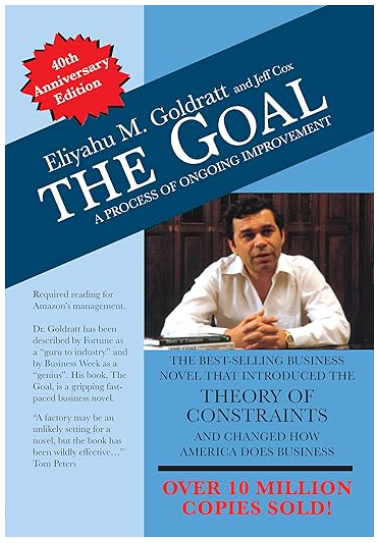
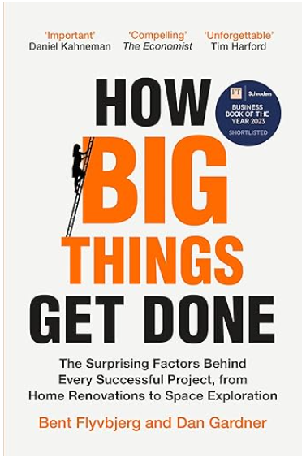

About me
Gaurav Chaturvedi
For more than twenty years, I have worked inside large organizations trying to improve how work gets done. Along the way, I kept encountering the same questions.
Why is knowledge work still so manual, fragmented, and dependent on heroic individuals? Why do enterprise systems evolve so slowly when the underlying opportunities seem revolutionary? Why are people so stressed and unhappy in their jobs?
Today, agentic AI is forcing us to revisit these questions. But AI alone is not the answer. The bigger challenge is redesigning how knowledge, decisions, technology, and people work together.
This site is my exploration of that journey — through ideas, experiments, and building real systems.
01
Think
Exploring why knowledge work and enterprise technology evolved the way they did - and what needs to change.
02Build
Build practical AI systems to solve real-world problems and discover what actually works.
03Teach
Capture insights from the journey because learning compounds when it is shared.
My certifications
AWS credentials and cloud practice.
A set of AWS certifications that support practical delivery across cloud foundations, engineering, data, architecture, and machine learning.
AWS Certified Cloud Practitioner
AWS Certified Data Engineer Associate
AWS Certified Developer Associate
AWS Certified Machine Learning Specialty
Solutions Architect Associate
Books I am inspired by
Books that shape how I think about systems.
These books influence how I think about execution, constraints, transformation, and delivery at scale.

